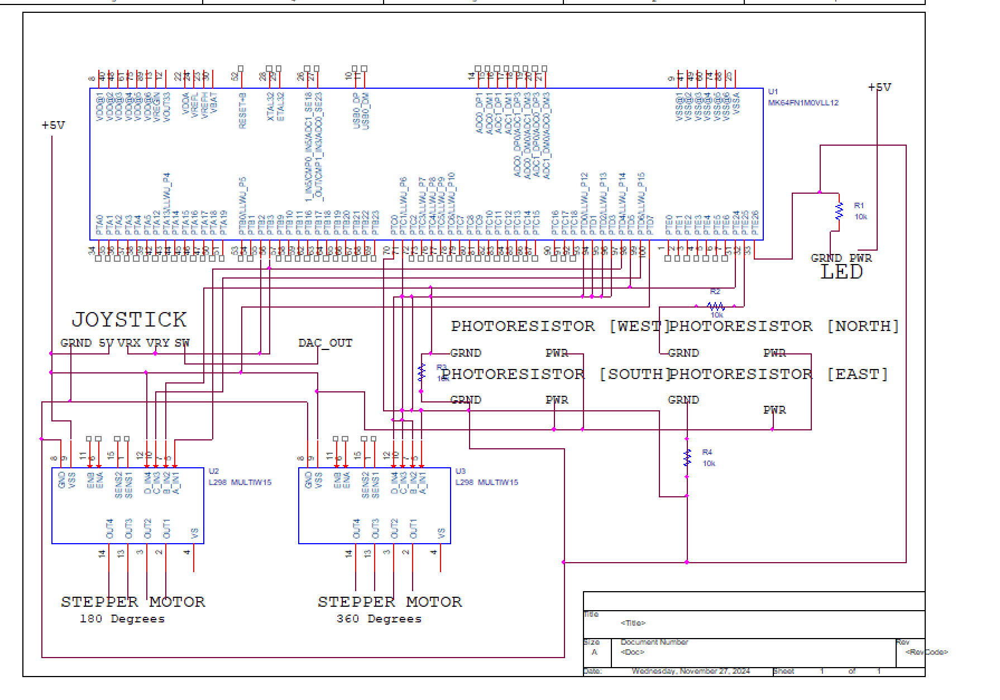
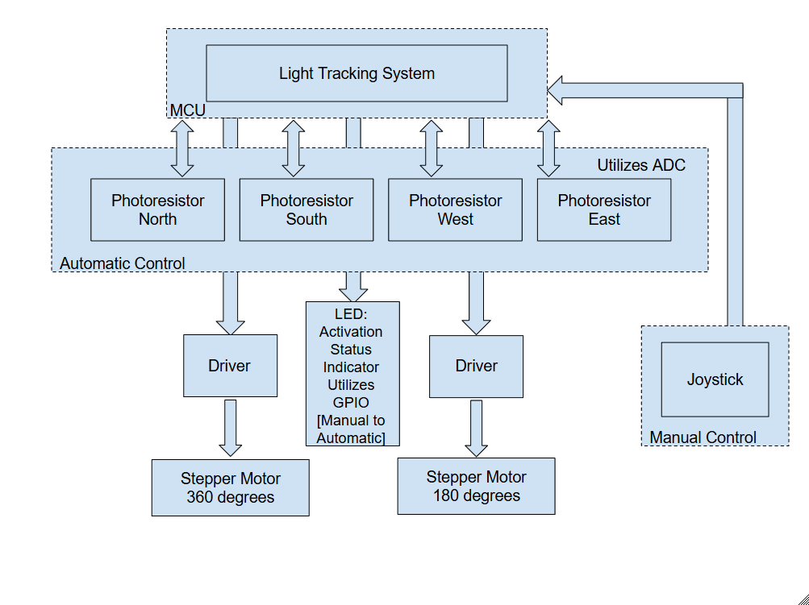
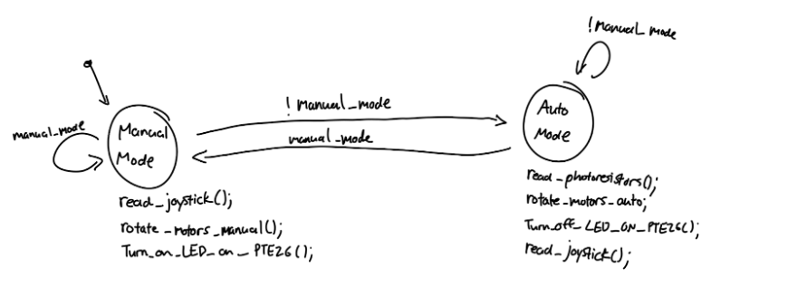
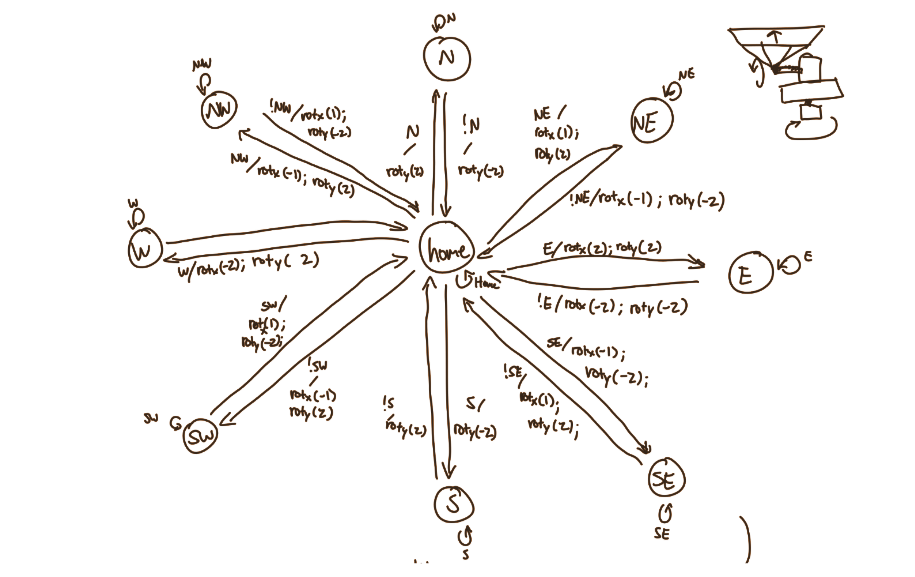
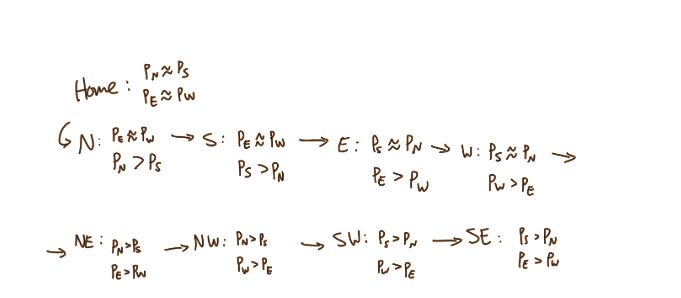

Solar Tracker
The main goal of this project was to create an automated solar panel that would track where the sun's peak light would be. Why did I choose to do this project? Because it looked cool.
Components
- MK64 FRDM Board - Uses an ARM microcontroller which controlled all of the movement and sensor logic for this project.
- 4 Photoresistors - Sensors which cary their resistances based on the current light levels. Used for determining the direction of sunlight.
- 2 stepper motors - Responsible for the movement of the panel itself.
- Joystick - Used to manually adjust the rotation of the panel if needed.
- Breadboard
- 4 10k resistors
- 2 Stepper motor driver module
- Jumper wires
Schematic

Block Diagram

Summary of Design
The main goal of this project was to create a simulated automated solar panel that would track where the sun’s peak light would be. Using four photoresistors, it would track the light intensity in four directions, represented by north, south, west, and east. In addition to the four cardinal directions, I also used combinations of these four photoresistors to obtain diagonal positions (northwest, northeast, southeast, southwest). There is also a fifth, neutral position, where the solar tracker is facing straight up.
The movement itself is done by using two 5V stepper motors. One is responsible for horizontal movement, and the other vertical. Both of these are controlled by the K64.
The FRDM-K64F board is the main controller. It is responsible for reading the values of the photoresistor or the joystick using ADC, and it controls the stepper motors using GPIO. It also executes all the logic needed for solar tracking.
I also implemented a manual control system, utilizing a joystick to control the position of the stepper motors. This was useful for various reasons, but the main reason was to provide a convenient way to reset the motor positions.
System Design
In the manual mode state, the user will move the joystick, which will cause the corresponding horizontal and vertical motors to rotate. There is an LED attached to Port E, pin 26, that will light up in manual mode. In order to switch to automatic mode, the user will press on the joystick button (Joystick_SW) to toggle the manual_mode variable. When this happens, the position of the stepper motors will be solely determined by the state of the photoresistors. The following image represents the main finite state machine (FSM) used. 
Now let's talk about automatic solar tracking. The main principle behind the automatic movement is that starting from a neutral, home position, the motors will move the solar panel towards the position with the most light. For example, if the north and west photoresistors are greater than the south and east photoresistors, the solar panel will move towards the northwest, stopping once the horizontal stepper motor rotated is 45 degrees counterclockwise, and the vertical motor 45 degrees from the horizontal. If all the photoresistors receive roughly equal lighting, then the solar tracker will be in the home position, which is facing straight upwards.
Every time the direction of the light source changes, the solar panel will first return to home position before rotating to the new direction. This was mostly done because it was the simplest implementation I could think of using stepper motors.
The following image is the FSM for auto solar tracking.
 
Here, rot_y(x) corresponds to the rotation of the vertical stepper motor by x * 45/2 degrees. This means that, in practice, the vertical rotation will be at most 45 degrees. rot_x(x) represent the rotation of the horizontal stepper motor by x * 45 degrees.
The various state transition conditions are represented below. P_x represents the ADC reading value of the photoresistor in the x direction. Also, the arrows in the below drawings don’t mean anything.
Some Discussion
The main challenge of this project was the ADC readings were inconsistent between the four photoresistors, which each one reading different values in response to the same light. I were able to get around this by manually checking the range of values that each photoresistor would read, and mapping them to a value between 0 and 255. These range of values also varied significantly every time something would change–like if I changed rooms or moved a wire, so I would have to re-measure the range of reading values each time in order for solar tracker to work properly.
Something else that I would like to note is that the current solar tracker is probably not very energy efficient. This is due to the fact that it uses two 5V motors which potentially draw too much current. There is also the fact that, due to the way the code was designed, the K64 is constantly running and polling. This could be fixed by using smaller, lower powered motors, and using interrupt driven actions. Also, realistically, since the sun’s movement is rather slow, the K64 probably only needs to check the lighting once every few minutes, rather than constantly.
Another possible improvement could be using servo motors rather than stepper motors. While stepper motors have their merits, they could not achieve absolute positioning. If I were to, for example, turn the solar tracker off, and turn it back on, there would be no way for the K64 to know where the stepper motors are at that point. It was for this reason that I needed a manual mode, a home position, and such a complicated state machine. If I were to use servo motors, I could tell the motors exactly what position to be in without regard for the previous position. This could potentially make the implementation much simpler, and make the tracker movement more efficient, since I won’t have to return to home every time the light moves.